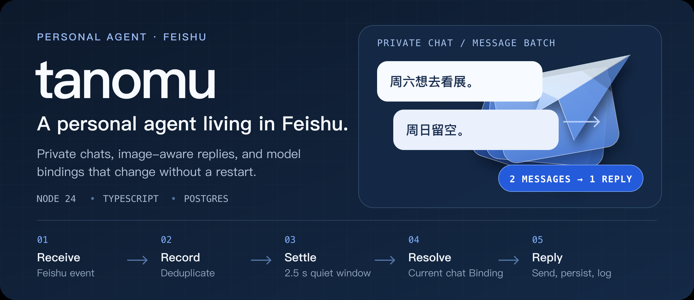
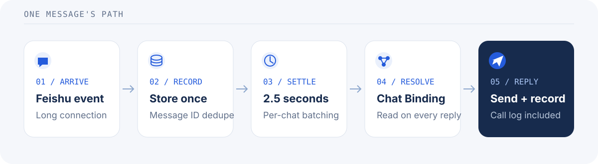

A personal agent, living where you chat
tanomu is a self-hosted agent for Feishu private conversations. It stores each conversation in Postgres, gathers rapid messages into one model call, accepts images with vision-capable models, and resolves the active model Provider for every reply.
- Private by design. Messages and replies belong to their Feishu conversation; there is no cross-conversation memory.
- Bursts become one reply. A 2.5-second quiet window collects rapid messages. Feishu redeliveries are deduplicated by message ID.
- Bring your own model. Use OpenAI-compatible, Anthropic, or Google providers through the Vercel AI SDK. A changed chat Binding applies to the next reply—no restart required.
- Observable without logging image bytes. Record model requests, responses, token usage, latency, and failures. Image attachments are logged as media type and size, not raw content.
From message to reply

The domain loop stays independent of Feishu and the database. Adapters connect the long-connection listener, Postgres, model Providers, and the admin console at the application boundary.
Run it locally
You need Node 24+, Docker, a Feishu app, and a model Provider. The package manager is pnpm 11.20.0, available through Corepack.
corepack enable
pnpm install
cp .env.example .env
# Fill in .env with your Feishu app and model Provider settings.
docker compose up -d db
pnpm devThe server applies migrations on startup. To open the admin console, run pnpm dev:admin in another terminal and visit localhost:3000. For Feishu sign-in, allow http://localhost:3000/auth/feishu/callback in the app's Security settings and publish a new app version.
Send a private message in Feishu to try the full loop. Only one listener receives each Feishu event: if production uses the same app, stop its listener before testing locally. See the local-listener warning.
Current scope
- Private Feishu conversations are implemented. Group conversations, long-term Memory, feeds, and digests are design directions, not shipped features.
- Replies use the current message batch. Stored conversation history is not yet replayed to the model.
- The initial Provider and chat Binding are imported from environment variables only when no chat Binding exists. Later
CHAT_*changes do not replace a stored Binding. - Model request and response content is retained in the call log. Protect the database and its backups accordingly.
Project map
- packages/core — Conversation domain logic and message batching; no Feishu or database imports.
- apps/server — Node process, Feishu listener, Postgres adapters, Providers, and HTTP.
- apps/admin — React admin console, built by Vite and served by the server.
- deploy — Production Compose configuration and database backups.
Develop
pnpm test # Unit tests
pnpm test:db # Unit + Postgres-backed tests; requires the local compose DB
pnpm test:factory # Software-factory controller and workflow tests
pnpm lint
pnpm typecheckRead the domain glossary, architecture decisions, implementation guide, and deployment runbook before contributing.